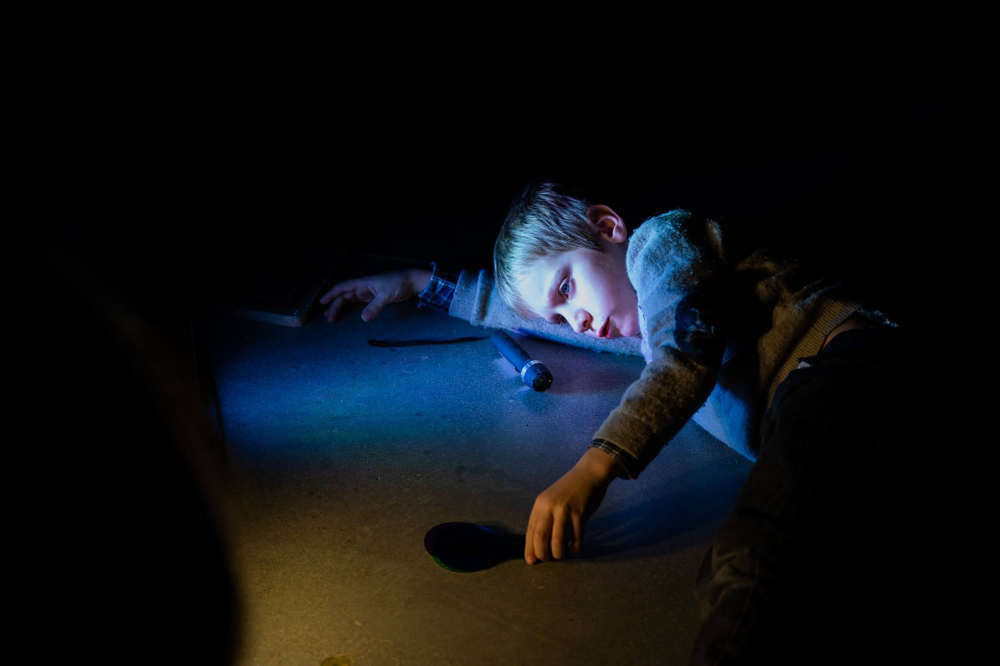

Color, gesto y textura
Pintura, materiales sueltos, pruebas y marcas sin un resultado esperado como meta.
Martes · 17 a 18.30h y 19 a 20.30h · 1-12 años · Enclave Pronillo
Sesiones para familias en Santander con actividades sensoriales, creativas y de construcción. En Espacio en Familia cada niño, niña y acompañante explora materiales, luz, sonido, texturas y movimiento a su ritmo, en un entorno pensado para jugar juntos sin prisas.



Espacio en Familia no va de consumir una actividad cerrada. Va de entrar en un entorno preparado con intención y dejar que cada niña, niño y acompañante encuentre su ritmo de relación con materiales, luz, sonido, texturas y movimiento.
Cada sesión propone una atmósfera distinta: zonas de calma, rincones sensoriales, materiales de construcción, superficies para pintar, piezas para mover y espacios donde observar también cuenta. No es una actividad para soltar a los niños, sino un tiempo compartido para mirarles jugar desde cerca.
Pintura, materiales sueltos, pruebas y marcas sin un resultado esperado como meta.
Piezas, madera, telas y superficies para construir, desmontar y volver a imaginar.
Un lugar donde sorprenderse del caos a la calma o viceversa en el espacio Entropía.
La referencia general es desde 1 año hasta 12 años. En bebés y primera infancia el adulto acompaña muy de cerca; a partir de los 18 meses suele ampliarse la exploración motriz, sensorial y social.
Sí, obligatoriamente. Este espacio está pensado para jugar, observar y explorar en relación, no para “dejar” al niño y marcharse. Es una oportunidad para el adulto de volver a descubrir el mundo a través de la mirada infantil.
Precisamente ese es uno de los puntos fuertes: no hay una consigna única ni secuencia cerrada para todo el grupo. Cada familia y cada niña o niño encuentra su propio camino.
Fomenta la confianza mutua, te ayuda a entender cómo tu hijo resuelve problemas, qué le interesa y cuál es su ritmo real. Es un tiempo juntos sin pantallas, sin prisa y sin que nadie os diga qué hacer.
Sí. No hay actividad dirigida donde todos deben participar igual. Algunos niños observan primero, otros saltan directamente. El espacio lo permite, sin presión.
Cada martes de 17 a 18.30h y de 19 a 20.30h en Enclave Pronillo. Una experiencia pensada para entrar sin prisa, explorar juntos y salir con ganas de volver.